J'irai mourir sur vos terres
#roman-policier
Rouge Brésil
#roman-historique
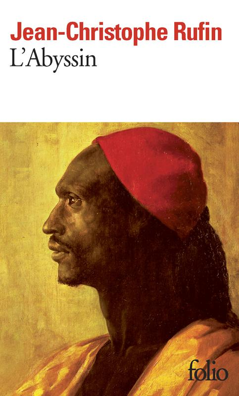
L'Abyssin
#roman-historique
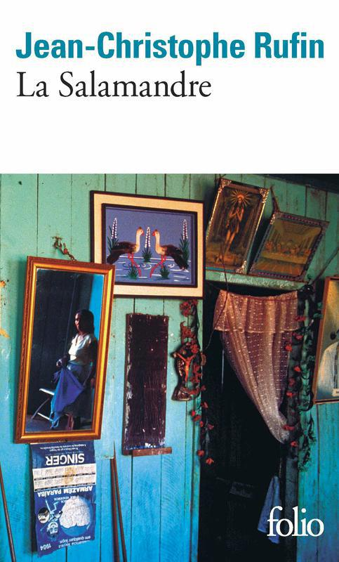
La Salamandre
#roman
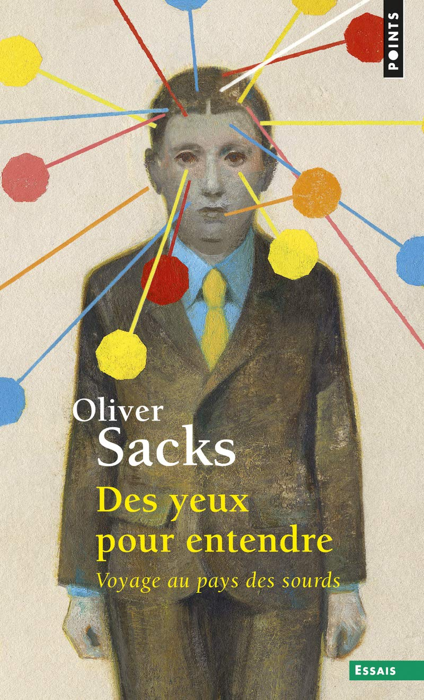
Des yeux pour entendre - Voyage au pays des sourds
#essai
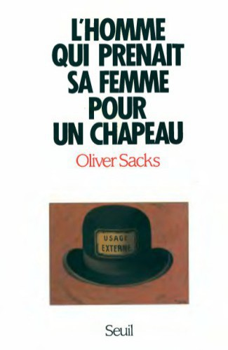
L'Homme qui prenait sa femme pour un chapeau
#essai
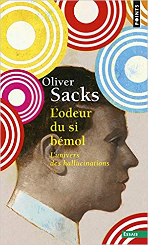
L'Odeur du si bémol - L'univers des hallucinations
#essai
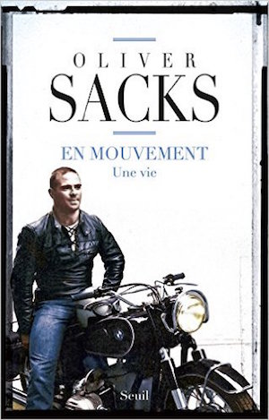
En mouvement
#essai
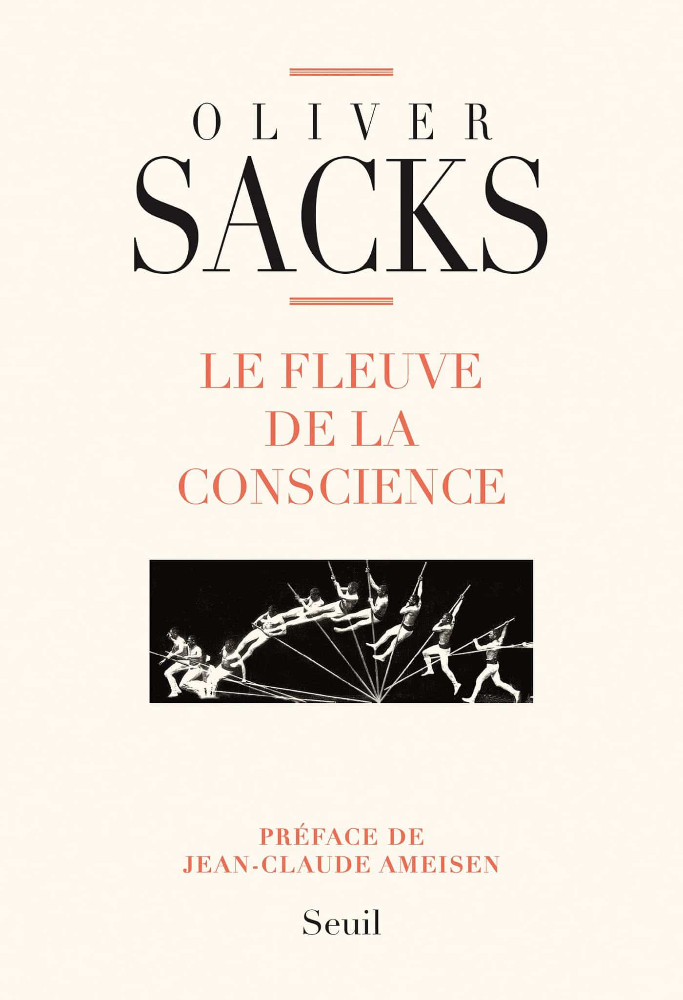
Le Fleuve de la conscience
#essai
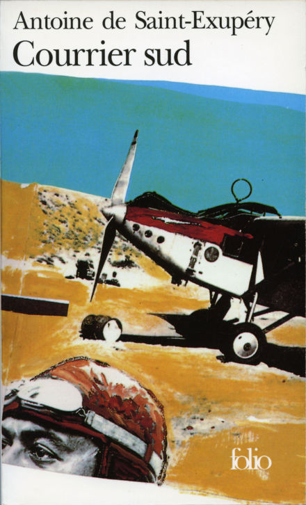
Courrier sud
#roman-d'aventures
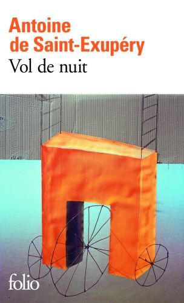
Vol de nuit
#roman
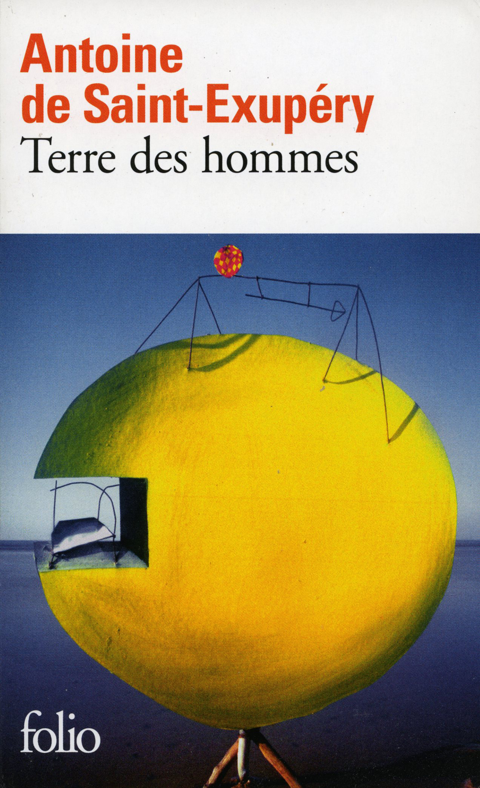
Terre des hommes
#roman-d'aventures
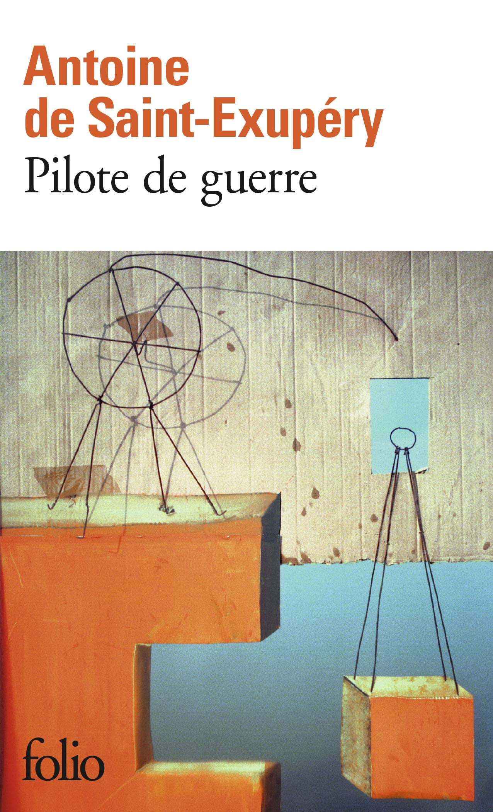
Pilote de guerre
#roman
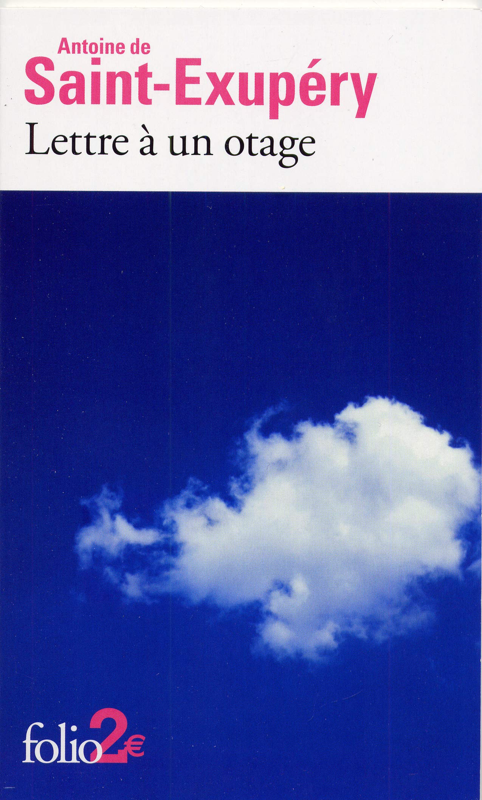
Lettre à un otage
#roman
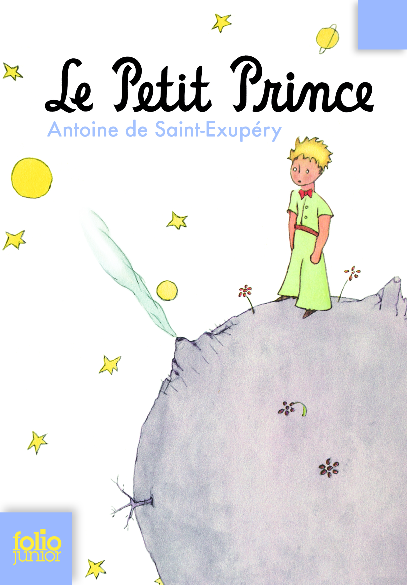
Le Petit Prince
#conte
Citadelle
#roman
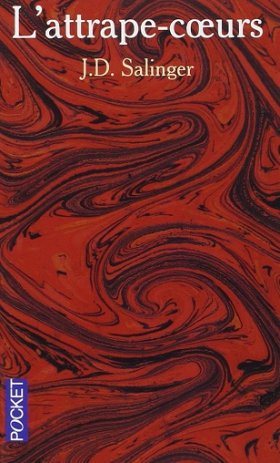
L'Attrape-cœurs
#roman
La Tour des Fous
#fantasy
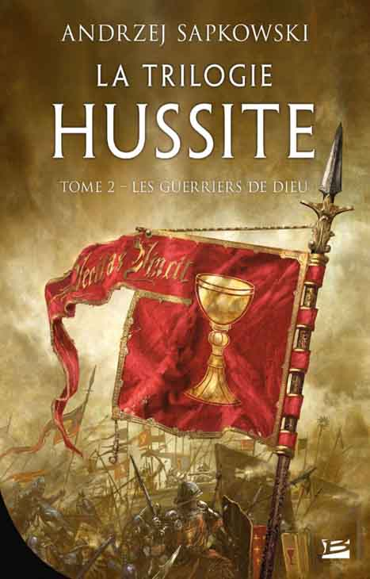
Les Guerriers de Dieu
#fantasy
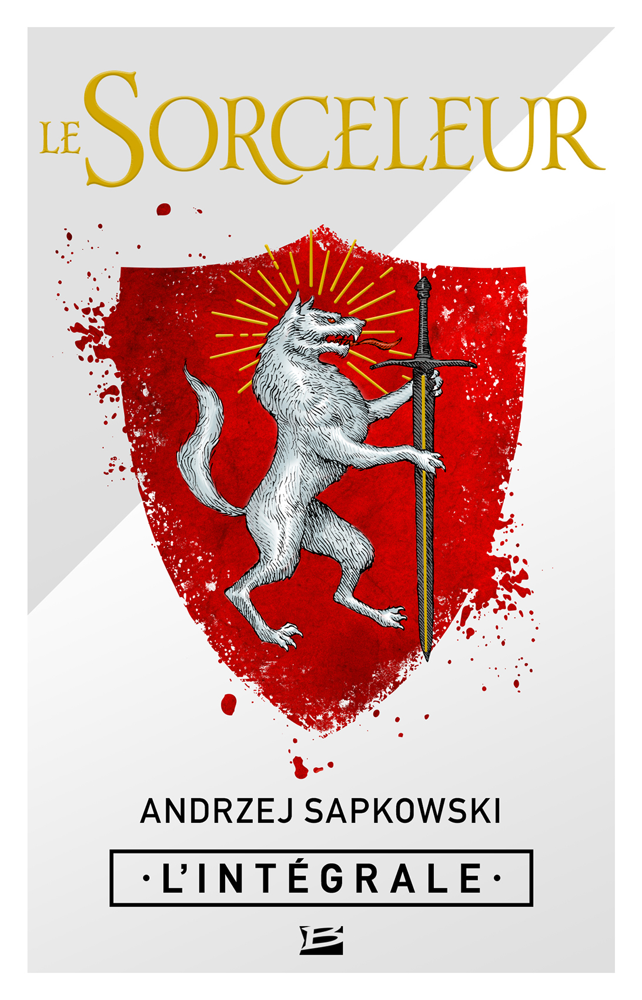
Sorceleur - L'Intégrale
#fantasy